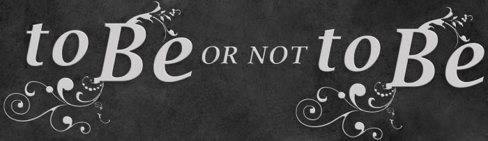

Глагол ‘to be’

«Быть или не быть?» (to be or not to be?) глаголу ‘быть’ в наших предложениях? В этом уроке мы будем решать этот вопрос.
В английском языке есть особый глагол ‘to be’ (быть, находиться), который лежит в основе большого количества английских грамматических конструкций, оттого он и такой важный, и поэтому живёт по своим правилам. Вот так спрягается ‘to be’ в настоящем времени:
to be
is
He is (he’s)
She is (she’s)
It is (it’s)
am
I am (I’m)
are
We are (we’re)
You are (you’re)
They are (they’re)
Произношение:
am /əm/ – обычное, /æm/ – под ударением.
is /ɪz/
are /ɑː/ – британское, /ɑːr/ – американское
В скобках указаны сокращенные разговорные формы:
I’m /aɪm/ – обычное, /ʌm/ – очень разговорное.
he’s /hɪz/, she’s /ʃɪz/, it’s /ɪts/
we’re /wɪə(r)/ you’re /jʊə(r)/, they’re /ðeə(r), ðeɪə(r)/
При помощи глагола ‘to be’ в этом уроке мы будем составлять простые предложения, которые не содержат другого глагола, потому что в английском предложении глагол должен быть. Например:
I am a teacher. – Я учитель.
You are a student. – Ты/Вы студент(-ка).
He is a boy. – Он мальчик.
She is a girl. – Она девочка.
The book (it) is new. – Книга новая.
We are Russian. – Мы русские.
They are English. – Они англичане.
Дословно будет: Я есть учитель, мы есть русские и т.д. То есть в русском языке глагол ‘быть’ отсутствует, а в английском без него никак. Когда-то и в нашем языке были подобные формы... но их давно нет.
Как вы видите из примеров, глагол ‘быть’ как бы связывает слова между собой, поэтому он ещё называется глагол-связка.
В прошедшем времени у глагола всего две формы: was /wɔz/ и were /wɜː/.
to be
was
I was
He was
She was
It was
were
We were
You were
They were
He was a student, now he’s a teacher. – Он был студентом, теперь он учитель.
You were fast, now you’re slow. – Ты был быстрый, теперь ты медленный.
They were in Moscow, now they’re in London. – Они были в Москве, теперь они в Лондоне.
I was young, now I’m old. – Я был молод, теперь я стар.
Я стар, я очень стар, я суперстар!.. Извините, отвлёкся... шутку вспомнил. (superstar /'s(j)uːpəstɑː/ суперзвезда)
Интересный момент с озвучкой выше. Слово Moscow должно быть произнесено так: /'mɔskəʊ/, но произнесено оно: /'mɔskaʊ/. Так говорят в Северной Америке, откуда родом диктор по имени Scarlet (не Йоханссон). При этом cow /kaʊ/ это корова. Возможно, жители Северной Америки считают, что в Москве много коров, оттого столице и дали такое название... Но это не точно.")
Итак, благодаря одному только глаголу ‘to be’ можно построить очень много предложений, даже в прошедшем времени.
Посмотрим на другие примеры:
- It’s me. – Это я.
- It’s a good book, but it’s old. – Это хорошая книга, но она старая.
- It is red or black. – Оно (он, она) красное или черное.
- It is dark. – Темно.
- It’s good to be here. – Хорошо быть здесь.
It’s везде ведёт себя по-разному:
It, помимо ‘оно’, также переводится как ‘это’. Это (1) пример. В нём личное местоимение ‘I’ является дополнением, поэтому принимает форму ‘me’. Запомните: it’s = это.
Во (2) примере ‘it’ показывает оба значения: и ‘это’, и ‘оно’ (book – ‘оно’ на английском, но книга – ‘она’ на русском).
В (3) примере невозможно точно определить о чём идет речь, поэтому ‘it’ может быть переведено любым из трёх вариантов.
В (4) примере ‘it’ используется для создания безличного предложения. It is (или it’s) в таких предложениях не переводятся, но обязательны для создания такого предложения.
В (5) примере также безличное предложение, но мы видим глагол ‘to be’ в неопределенной форме (инфинитиве).
Примечание: a good book /gʊd/ /bʊk/ – хорошая книга. Как вы могли заметить, буквосочетание ‘oo’ читается как /ʊ/. В следующем уроке мы подытожим это правило. Также обратите внимание, что прилагательное стоит между артиклем и существительным.
Отрицание not
Отрицательное предложение с глаголом ‘to be’ строится очень просто: добавляем отрицательную частицу not /nɔt/ (не) после глагола ‘to be’:
They are not English, they are Russian. – Они не англичане, они русские.
He’s not a nice young man. – Он неприятный молодой человек.
It’s not old, but it’s not useful already! – Он не старый, но уже бесполезный! (о смартфоне, например; дословно: не полезный уже)
She’s not crazy, she’s just strange. – Она не сумасшедшая, (она) просто странная.
I’m not a good driver, but he is just an amazing driver. – Я не хороший водитель, но он просто потрясающий водитель.
Предложения выше можно начать и так: they aren’t /ɑːnt/, he isn’t /ɪznt/, it isn’t, she isn’t. Смысловых различий не будет. Все сокращения не используются в документах, деловой переписке, а также в важных учебных письменных работах, поэтому и мы в наших письменных работах будем писать полные формы.
Указательные местоимения
Вместе с глаголом ‘to be’ часто идут указательные местоимения. Мы уже знакомы с личным местоимением ‘it’ в значении ‘это’. А ещё есть this и that, и они тоже переводятся как ‘это’. Замечааательно... И какое теперь куда ставить?
Именно местоимения this (этот) и that (тот) являются указательными. Т.е. если вам нужно именно указать, то их и нужно использовать. Разница между ними будет в том, что местоимением ‘this’ указывают на объект, который находится вблизи, а местоимением ‘that’ указывают на объект, который находится дальше (вдали). Когда мы его указали и назвали, дальше используем it.
This is a house. It’s a big house. – Это дом (перед нами). Это большой дом.
That is a door. It’s a small door for such a big house. – Это дверь (где-то дальше). Это маленькая дверь для такого большого дома.
This is not a pen, it’s a pencil. That’s (= that is) a pen. – Это не ручка, это карандаш. Вот это (там) ручка.
Говоря не о предмете, а о ситуации, this указывает на ближайшую по времени ситуацию, в настоящем времени, а that на более раннюю, в прошлом.
This is great! – (Это) здо́рово (замечательно)!
That was great! – Было здо́рово (замечательно)!
Диктор в аудио выше сделал интонационное ударение на слово that, тем самым объединив два предложения, как будто бы они связаны. В таком случае перевод будет такой: – Это здорово. – Вон то было здорово. (а это так себе...)
В первоначальной задумке интонационное ударение должно было быть на слове great, в таком случае вместо this и that можно поставить ‘it’, и смысл не изменится! Более того, сами носители иногда не знают, какое из них и где ставить, а американцы, например, любят употреблять that вместо it, поэтому не будем сильно заострять на этом внимание. Если что-то будет не логично, постараемся разобраться с таким безобразием... Также у указательных местоимений есть множественное число, но поговорим об этом в следующем уроке.
Когда же мы указываем на что-то конкретное, то с переводом становится всё проще, потому что вариант перевода ‘это’ отпадает, и остаются ‘этот, тот, то, та, эта’. Например:
This cat is fast. – Эта кошка (этот кот) – быстрая(-ый).
That dog is slow. – Та собака (тот пёс) – медленная(-ый).
Вспомним теперь диалог из урока произношения:
Последняя фраза немного сложна для понимания, потому что дословно она означает: "Ну, это приняло тёмный (неприятный, безрадостный, мрачный) поворот". Однако, смысл такой, как в переводе выше. Поэтому мы её частично проигнорируем. В ней есть ‘that’, которая указывает на всю ту неловкую ситуацию, которая произошла. ‘This’, возможно, тоже подходит здесь без малейшего изменения смысла, но ‘that’ позволяет немного дистанцироваться от ситуации, плюс это американский английский. Вариант с ‘it’ не указывает на ситуацию, ‘it’ больше подходит для отдельных существительных, поэтому менее подходящий для данного конкретного диалога. Well в этом предложении используется как вступительное слово при каком-либо замечании, либо как способ заполнения речевой паузы. Обычно в таких случаях оно переводится как междометие ‘ну’, но здесь такой вариант не подходит. Well также может быть наречием, прилагательным, существительным и глаголом. Мы увидим это в последующих уроках.
Слово buds это сокращенный вариант слова buddies /ˈbʌdɪz/ во множественном числе. В единственном числе это слово buddy /'bʌdɪ/ друг, дружище, приятель, старина. Обычно для друга используют уже известное нам слово friend. В диалоге речь идет о более близком друге, поэтому точнее будет перевести как приятели, но вариант с друзьями как-то лучше звучит...
Слово okay /əʊ'keɪ/ само по себе может означать всё в порядке; всё хорошо. В данном случае используется его значение нормальный, и дословно: It’s okay = Это (есть) нормально.
Вопросы с глаголом to be
Вопросы для предложений с глаголом ‘to be’ строятся очень просто. Возьмём, например, утвердительную фразу: I am busy. /'bɪzɪ/ (Я занят.). Меняем местами ‘I’ и ‘am’, и вопрос готов: Am I busy? (Я занят?). В русском языке мы ничего местами не меняем, лишь ‘поднимаем’ голос к концу фразы. В английском интонацию нужно поднимать в вопросах, требующих ответа ‘да’ или ‘нет’. Например:
Are you ➚ busy? Ты ➚ занят?
Is she ➚ successful? Она успешная?
Are you ➚ single? Ты холост? или Ты не замужем?
На все вопросы можно отвечать кратко: Yes /jes/ Да и No /nəʊ/ Нет. Но мы будем давать полные ответы. Таковыми являются:
Yes, I am. Да, (занят).
No, I am not (I’m not). Нет, (не занят).
Yes, we are.
No, we are not (we’re not).
Yes, you are.
No, you are not (you’re not).
Yes, he is.
No, he is not (he’s not).
Yes, she is.
No, she is not (she’s not).
Yes, it is.
No, it is not (it’s not).
Yes, they are.
No, they are not (they’re not).
Yes, I was.
No, I was not (I wasn’t).
Yes, we were.
No, we were not (we weren’t).
И т.д.
Послушаем приветствие:
How are you? Как ты? (Как дела?)
Интонацию вверх в нём не сделали, потому что вопрос не требует ответа ‘да’ или ‘нет’. Более того, он вообще может не требовать ответа, т.к. данный вопрос является приветствием, и на него можно ответить таким же вопросом. Михаил Задорнов любил пошутить по этому поводу: спрашиваю как у них дела, а они уходят... А ну, стоять! Щас я вам расскажу как у меня дела! И рассказываю им десять минут про свои дела, а они стоят с выпученными глазами. Ну тупыыыеее...
Ответом на вопрос How are you? часто являются:
I’m fine, thanks. Всё хорошо, спасибо.
I’m fine, thank you. Всё хорошо, спасибо (тебе).
I’m fine, thank you. And you? Всё хорошо, спасибо. А ты? (или А у тебя?)
Фразы с fine стандартные, означают: У меня всё нормально, У меня всё хорошо, Всё в порядке. Fine в данной ситуации = OK (okay), т.е. вы как бы и не жалуетесь, но и не радуетесь. При этом в словаре: fine /faɪn/ хороший, прекрасный, превосходный; хорошо себя чувствующий. Более позитивной фразой будет: I’m good, если всё-таки хотите подчеркнуть, что дела у вас идут лучше, чем просто OK, при том, что обычным переводом слова good является ‘хороший’. Т.е. получается, что дословно fine у нас ‘прекрасный’, а good ‘хороший’, но когда речь идет о подобных приветственных вопросах, то получается немного наоборот. Это такой тонкий момент, который бы вам мало кто рассказал. Да, такой логичный английский язык. "Вы держитесь! Всего доброго! Хорошего настроения!"
Итак, мы теперь можем создавать много разных предложений, зная только один глагол ‘to be’. Поэтому вашим ответом на вопрос в начале урока «Быть или не быть?» должен стать: «Быть». Скоро тема простого предложения будет раскрыта полностью. Пока закрепим пройденный материал. А к теме вопросов мы ещё вернёмся.
Словарь
big /bɪg/ большой
black /blæk/ чёрный
boy /bɔɪ/ мальчик
bud /bʌd/ = buddy дружище, приятель
busy /'bɪzɪ/ занятой
crazy /'kreɪzɪ/ сумасшедший
dark /dɑːk/ тёмный
door /dɔː/ дверь
driver /'draɪvə/ водитель
for /fɔː/ для
girl /gɜːl/ девочка; девушка
good /gʊd/ хороший
great /greɪt/ 1) великий 2) замечательный
here /hɪə/ здесь
house /haʊs/ дом (здание)
in /ɪn/ в (внутри)
just /ʤʌst/ просто
London /'lʌndən/ Лондон
Moscow /'mɔskəʊ/ Москва
new /njuː/ новый
now /naʊ/ сейчас, теперь
okay /əʊ'keɪ/ всё в порядке (хорошо); нормальный; ладно
old /əʊld/ старый
or /ɔː/ или
pen /pen/ ручка (для письма)
pencil /'pens(ə)l/ карандаш
red /red/ красный
slow /sləʊ/ медленный, медленно
small /smɔːl/ маленький
still /stɪl/ до сих пор, (всё) ещё, по-прежнему
strange /streɪnʤ/ странный
student /'stjuːd(ə)nt/ студент, студентка; учащийся
teacher /'tiːʧə/ учитель, учительница; преподаватель(-ца)
that /ðæt/ это (тот, та, то)
this /ðɪs/ это (этот, эта)
think /θɪŋk/ думать, мыслить
useful /'juːsf(ə)l, -ful/ полезный, пригодный
young /jʌŋ/ молодой
Упражнения
Упражнение 1. Выберите правильный ответ answer /'ɑːnsə/ на заданный вопрос question /'kwesʧən/. На некоторые вопросы ответы у разных людей могут быть разные. Вы даёте те ответы, которые относятся к вам. Произнесите вопрос и ответ вслух. Т.к. это устное задание, а не письменное, в отрицаниях будем использовать сокращения, а именно ’s not и т.п., акцентирующие внимание на отрицании. Варианты типа isn’t будут иметь такой же смысл, но без акцента на not.
Дополнительные слова для упражнения:
who /huː/ кто
Russia /'rʌʃə/ Россия
В слове Russia звук /ə/ произносится как наша краткая /a/.
Помним, что глагол have не нужно переводить дословно: nice to have – хорошо, когда есть... (досл.: приятно иметь)
Теперь послушайте один из вариантов правильного выполнения задания:
Упражнение 2. Впишите глагол ‘to be’ (в правильной форме, возможно, отрицательной) в предложения ниже и переведите их.
- That teacher young, but he a good teacher.
- This boy and that girl best friends.
- This pencil red. It black.
- I think I a good driver. Everybody runs away from me when (...разбегаются от меня, когда...) I drive.
- This elephant small, it must be (это должно быть) the son or daughter of that big elephant.
- That a great evening yesterday (вчера). Now everybody wants to go to that house again (снова).
- This car old, I still drive it, but I want a new car.
- It nice to live with our (своими) children.
- We in Moscow, now we in London. We like to see the world.
- The Crazy House in Vietnam.

Упражнение 3. Переведите предложения с русского на английский.
- Та музыка была замечательной. Я хочу послушать её с тобой сейчас.
- Всё нормально, это просто старая машина, она едет медленно.
- Тот учитель сумасшедший. Я думаю, он живет в (the) зоопарке.
- Это большой дом с черной дверью, а тот дом маленький и с красной дверью.
- Приятно быть здесь с вами, ребята. Вы хорошие друзья. Вы лучшие друзья (приятели).
- Они были в (the) магазине тем днём. Было темно.
- Этот велосипед быстрый, детям нравится.
- Я думаю, лучше всего (досл.: это лучший) для них жить в Москве, а не в Лондоне.
- Эта книга новая, я хочу её прочитать. Это полезно.
- Хорошо, когда есть дети.
To be or not to be? That is the question.
Быть или не быть? Вот в чём вопрос.
Курс доступен в виде приложения на iOS и андроид (подробнее в уроке 1):